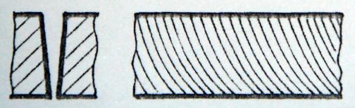

Appendix A: Analysis of common cuts
Analysis of mild steel common cuts: cutting with oxygen.
| Appearance | Possible causes | Solution |
|---|---|---|
No burrs. Vertical and regular striation. |
Suitable cutting parameters. Suitable feed rate. |
Striations offset significantly at the lower cut edge. Wider kerf width on the bottom surface. Feed rate too high. Power too low. Cutting gas pressure too low. Focus position too high. Lower feed rate. Increase power. Increase gas pressure. Lower focus position. Drip-shaped burrs similar to slags that are easy to remove.
Feed rate too high. Gas pressure too low. Focus position too high. Lower feed rate. Increase gas pressure. Lower focus position. Molten and connected metal burrs that are easy to remove as a whole piece. |
Focus position too high. |
Lower focus position. Molten burrs at both sides on the bottom surface that are hard to remove.
Feed rate too high. Gas pressure too low. Gas contamination. Focus position too high. Lower feed rate. Increase gas pressure. Replace with contamination-free gas. Lower focus position. Burrs at one side only.
Beam not aligned to the nozzle center. Defective nozzle orifice. Align the beam to the nozzle center. Exchange nozzle. Discharge of surface material only.
Power too low. Feed rate too high. Increase laser power. Lower feed rate. Blue plasma indicates that the sheet is not cut through.
Wrong gas (N2) Feed rate too high. Laser power too low. Use oxygen as assist gas. Lower feed rate. Increase laser power. Rough cut edge.
Gas pressure too high. Damaged nozzle. Nozzle diameter too large. Poor sheet quality. Lower gas pressure. Exchange nozzle. Install nozzle of correct diameter. Replace with better quality sheet. No burrs. Striations lag behind at the lower cut edge. Tapered kerf.  |
Feed rate too high. |
Analysis of stainless steel common cuts: cutting with nitrogen at high pressure.
| Appearance | Possible causes | Solution Smooth cut edge with regular ridged burrs. Focus position too low. Feed rate too high. Raise the focus position. Lower the feed rate. Rough, ridged and oxidized burrs at both sides of the lower edges when cutting large contour. Focus position too high. Feed rate too ow. Power too low. Overheated material. Lower the focus position. Increase the feed rate. Increase the power. Cooling of the material. Long, rough and ridged burrs on one side. Nozzle center is not aligned with the beam. Focus position too high. Pressure too low. Feed rate too low. Align the beam with the nozzle center. Lower the focus position. Increase gas pressure. Increase the feed rate. |
|---|---|---|
Light yellowish cut edge. |
High-purity nitrogen is mixed with oxygen. |
Use nitrogen of good quality. Linear plasma light.
Feed rate too high. Power too low. Focus position too low. Lower the feed rate. Increase the power. Raise the focus position. |
Light from cutting disappears at the start of cutting. |
Start-up acceleration too high. Focus position too low. Molten material can not be blown away. Lower the start-up acceleration. Raise the focus position. Add an additional piercing hole. Increase the gas pressure gradually. |
Rough cut edge. |